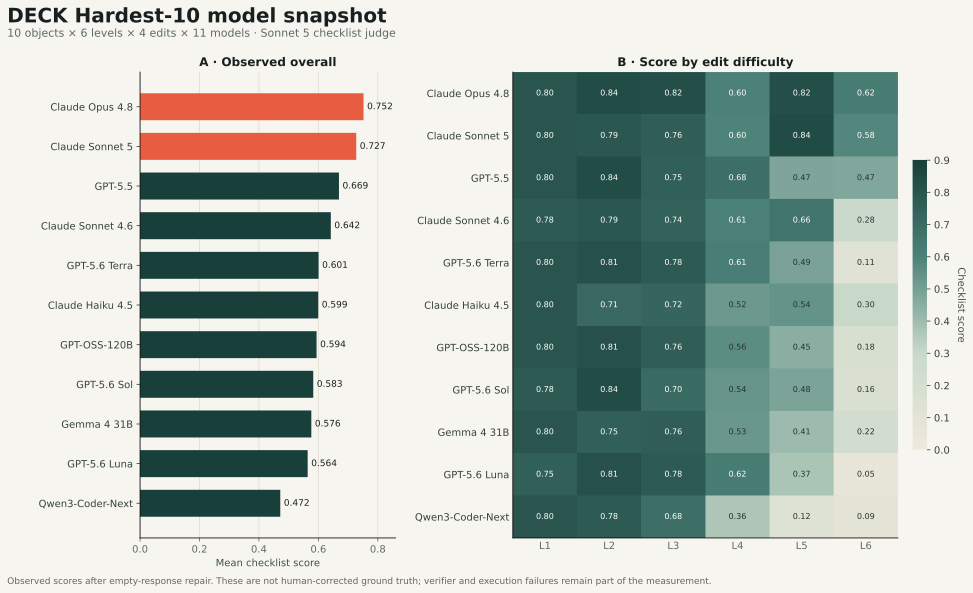

Single parameter
Change an explicit color, size, position, or rotation value already present in code.
Hardest-10 is the shared subset for both the main model comparison and the feedback experiments. That alignment makes every headline result traceable to the same 240 edit requests per model.
The levels adapt the SOLO taxonomy: difficulty grows with how many code regions and artifact relationships must be understood together—not simply with prompt length.
Change an explicit color, size, position, or rotation value already present in code.
Coordinate a loop, primitive type, or local spatial rule within one component.
Apply several independent changes across different code blocks without interference.
Add holes, merge geometry, or integrate new features with existing object relationships.
Interpret an abstract style while preserving the original object’s recognizable identity.
Build multiple new objects, environmental context, plausible scale, lighting, and relations.
Overall score is the mean item-level checklist score across all 240 tasks for a model. Render failures count as zero in this observed benchmark view.

“Exec.” is the round-0 Blender render success rate. Small ranking differences should not be interpreted without the verifier audit below.
| Rank | Model | Overall | L1 | L2 | L3 | L4 | L5 | L6 | Exec. |
|---|---|---|---|---|---|---|---|---|---|
| 1 | Claude Opus 4.8 | 0.752 | 0.800 | 0.838 | 0.825 | 0.602 | 0.825 | 0.622 | 96.7% |
| 2 | Claude Sonnet 5 | 0.727 | 0.800 | 0.788 | 0.758 | 0.596 | 0.842 | 0.581 | 98.8% |
| 3 | GPT-5.5 | 0.669 | 0.800 | 0.838 | 0.750 | 0.683 | 0.475 | 0.470 | 85.0% |
| 4 | Claude Sonnet 4.6 | 0.642 | 0.775 | 0.788 | 0.742 | 0.606 | 0.658 | 0.282 | 89.2% |
| 5 | GPT-5.6 Terra | 0.601 | 0.800 | 0.813 | 0.775 | 0.613 | 0.490 | 0.114 | 77.9% |
| 6 | Claude Haiku 4.5 | 0.599 | 0.800 | 0.713 | 0.725 | 0.521 | 0.540 | 0.299 | 87.9% |
| 7 | GPT-OSS-120B | 0.594 | 0.800 | 0.813 | 0.758 | 0.560 | 0.448 | 0.184 | 88.8% |
| 8 | GPT-5.6 Sol | 0.583 | 0.775 | 0.838 | 0.700 | 0.538 | 0.483 | 0.163 | 76.7% |
| 9 | Gemma 4 31B | 0.576 | 0.800 | 0.750 | 0.758 | 0.527 | 0.406 | 0.216 | 85.8% |
| 10 | GPT-5.6 Luna | 0.564 | 0.750 | 0.813 | 0.775 | 0.625 | 0.371 | 0.051 | 75.4% |
| 11 | Qwen3-Coder-Next | 0.472 | 0.800 | 0.775 | 0.683 | 0.363 | 0.125 | 0.085 | 70.4% |
Scores include the 2026-07-20 empty-judge response repair. They have not been corrected using the later verifier audit. Machine-readable versions: CSV · JSON.
Level 1 is systematically contaminated by false negatives and independent scene normalization; Levels 3–4 ask RGB views to verify metadata and topology; Levels 5–6 are heavily shaped by Blender execution rate, occlusion, and subjective semantics. Treat the table as a measurement of the current end-to-end pipeline, not a clean scalar of editing intelligence.
Opus 4.8 (0.752) and Sonnet 5 (0.727) lead overall, with especially strong L5 scores and high execution success.
The baseline contains 402 render failures. A model can understand the requested edit but still lose all task credit because it emitted an incompatible Blender API call.
The L1 ceiling around 0.8 is largely a verifier artifact: 92 observed zeros completed the intended code-side change and had no render failure.
Even after separating execution failures, L6 requires object completeness, scale, physical relationships, visibility, and coherent composition at once.